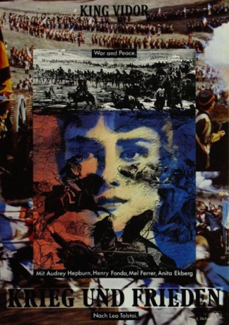

#7892 Krieg und Frieden
Alternativ: War and Peace
Auszeichnungen: für 3 Oscars nominiert 1 GoldenGlobes gewonnen
 
 IMDB-Wertung: 6.8 / 10
IMDB-Wertung: 6.8 / 10  Metascore: 0
Metascore: 0 
Natascha will sich mit der Vernunftheirat mit dem Prinzen Andrei Bolkonsky nicht anfreunden. Und gleichzeitig startet Napoleon Bonaparte seinen Schlachzug durch Europa und zieht 1812 auch in Russland ein.
Jahr: 1956
Dauer: 208 Minuten
FSK: 12
Land: USA Studio: A Paramount ReleaseTonspuren: DD2.0 - ,
Untertitel: Deutsch,
Auflösung: 1080p (1920x1080) Größe: 13414 MB
Genre: Drama, Krieg, Liebe
Regisseur: King Vidor
Drehbuch: Leo Tolstoy
Soundtrack: Nino Rota
Darsteller:
 Audrey Hepburn als Natasha Rostova
Audrey Hepburn als Natasha Rostova Henry Fonda als Pierre Bezukhov
Henry Fonda als Pierre Bezukhov Mel Ferrer als Prince Andrei Bolkonsky
Mel Ferrer als Prince Andrei Bolkonsky- Vittorio Gassman als Anatol Kuragin
 Herbert Lom als Napoleon
Herbert Lom als Napoleon- Oskar Homolka als Field Marshal Kutuzov
- Anita Ekberg als Helene Kuragina
 Helmut Dantine als Dolokhov
Helmut Dantine als Dolokhov- Tullio Carminati als Prince Vasili Kuragin
- Barry Jones als Prince Mikhail Andreevich Rostov
- Milly Vitale als Lisa Bolkonskaya
- Anna Maria Ferrero als Maria Bolkonskaya
- Wilfrid Lawson als Prince Bolkonsky
- May Britt als Sonia Rostova
- Jeremy Brett als Nikolai Rostov
 Sean Barrett als Petya Rostov
Sean Barrett als Petya Rostov John Mills als Platon Karataev
John Mills als Platon Karataev- Marisa Allasio als Matrosha (uncredited)
- Howard Marion-Crawford als Prince Bolkonsky (uncredited)
- Clelia Matania als Mademoiselle Geoges (uncredited)
- Giacomo Rossi Stuart als Young Cossack (uncredited)
- Enrico Maria Salerno als Narrator (uncredited)
 Robert Stephens als Officer Talking with Natasha (uncredited)
Robert Stephens als Officer Talking with Natasha (uncredited)- Lea Seidl als Countess Rostov
- Patrick Crean als Denisov
- Gertrude Flynn als Mariya Peronskaya
- Giuseppe Addobbati als House Servant (uncredited)
- Mario Addobbati als Young Servant at Rostov's (uncredited)
- Inna Alexeievna als Governess (uncredited)
- Luciano Angelini als Young Soldier at Borodino (uncredited)
- Cesare Barbetti als Young Soldier Shot in Front of Pierre (uncredited)
- Vincent Barbi als Balaga (uncredited)
- Patrick Barrett als Russian Soldier (uncredited)
- Michael Billingsley als Russian Soldier (uncredited)
- Augusto Borselli als (uncredited)
- Georges Bréhat als French Officer at Execution (uncredited)
- Mario Cardoni als Soldier (uncredited)
- Guido Celano als Victor (uncredited)
- Carmelo Consoli als (uncredited)
- Geoffrey Copleston als French Officer (uncredited)
- Tiziano Cortini als (uncredited)
- Giorgio Costantini als French Officer (uncredited)
- Dave Crowley als Russian Soldier (uncredited)
- Robert Cunningham als Pierre's Second at Duel (uncredited)
- Alex D'Alessio als Soldier (uncredited)
- Carlo Dale als Young French Officer (uncredited)
- Henry Danieli als (uncredited)
- Paul Davis als Young French Officer (uncredited)
- Richard Dawson als (uncredited)
- Lucio De Santis als Young Officer at Orgy (uncredited)
Datei: X:\1950-1959\Krieg und Frieden (1956, FSK12, 1920x1080).mkv seit 02.01.2018
Festplatte: HD 1900-1970
 Es gibt insgesamt 141 Filme in der Gruppe '1950-1959'
Es gibt insgesamt 141 Filme in der Gruppe '1950-1959'